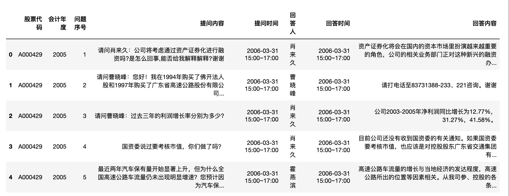
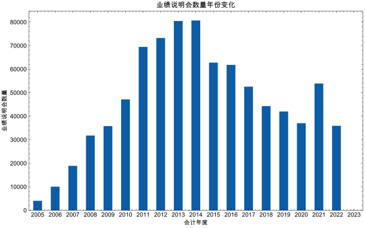
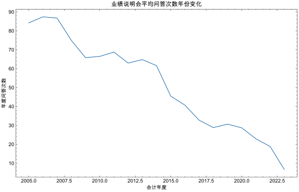

业绩说明会， 是我国上市公司和中小投资 者沟通交流的重要载体。 在年报披露后， 能够 帮助投资者快速、准确地抓取信息披露重点， 全面了解企业发展状况， 增进对企业价值及经 营理念的认同。上市公司的业绩说明会是金融领域中的重要事件，它为投资者、分析师和其他利益相关者提供了一个与公司管理层直接交流的平台。这种数据集的学术价值多方面体现。
- 公司沟通策略的研究：业绩说明会的数据可以帮助研究者深入了解公司如何与公众沟通其财务状况、业务策略和未来展望。这对于传播学、公关和企业战略研究领域都是宝贵的。
- 情感分析与市场反应：通过对业绩说明会中的语言和情感进行分析，研究者可以探索市场对公司信息披露的反应。这对于金融经济学和计量经济学的研究尤为重要。
- 公司治理与透明度：业绩说明会的频率、内容和与投资者的互动可以为研究者提供关于公司治理质量和透明度的线索。
- 预测模型的建立：这种数据集可以用于建立预测模型，预测公司的未来业绩、股价走势或其他相关指标。
- 行为金融学的研究：业绩说明会中的问题和答案可以为研究者提供关于投资者和分析师行为和心理的深入了解，从而深化我们对市场非理性行为的理解。
- 宏观经济指标的研究：通过对多家公司的业绩说明会数据进行汇总和分析，研究者可以获得宏观经济趋势和行业动态的宝贵见解。
总之，上市公司业绩说明会数据集为学术界提供了一个独特的、多维度的研究视角，有助于深化我们对金融市场、公司策略和投资者行为的理解。
数据集介绍
上市公司业绩说明会问答数据
【年度】
2005-2023年
【字段】
- 股票代码
- 会计年度
- 问题序号
- 提问内容
- 提问时间
- 回答人
- 回答时间
- 回答内容
【数据量】
841876
科研用途，仅供展示；如有任何问题， 请加微信372335839， 备注「姓名-学校-专业-业绩说明会」
导入数据
import pandas as pd
df = pd.read_excel('业绩说明会问答05-23.xlsx')
df.head()

'数据集覆盖的年度: {start}~{end}'.format(start = df['会计年度'].min(),
end = df['会计年度'].max())
'数据集覆盖的年度: 2005~2023'
#数据量
len(df)
841876
#字段包括
df.columns
Index(['股票代码', '会计年度', '问题序号', '提问内容', '提问时间', '回答人', '回答时间', '回答内容'], dtype='object')
设置matplotlib
import matplotlib.pyplot as plt
import matplotlib
import matplotlib_inline
matplotlib_inline.backend_inline.set_matplotlib_formats('png', 'svg')
#pip3 install scienceplots
import scienceplots
import platform
plt.style.use(['science', 'no-latex', 'cjk-sc-font'])
system = platform.system() # 获取操作系统类型
if system == 'Windows':
font = {'family': 'SimHei'}
elif system == 'Darwin':
font = {'family': 'Arial Unicode MS'}
else:
font = {'family': 'sans-serif'}
matplotlib.rc('font', **font) # 设置全局字体
plt.figure(figsize=(10, 6))
#年份变化(业绩说明会数量)
df['会计年度'].value_counts().sort_index()
会计年度
2005 4042
2006 10051
2007 18906
2008 31782
2009 35802
2010 47141
2011 69439
2012 73231
2013 80456
2014 80690
2015 62764
2016 61820
2017 52543
2018 44279
2019 42009
2020 37026
2021 53898
2022 35917
2023 80
Name: count, dtype: int64
df['会计年度'].value_counts().sort_index().plot(kind='bar')
plt.xticks(rotation=0)
plt.xlabel('会计年度')
plt.ylabel('业绩说明会数量')
plt.title('业绩说明会数量年份变化')
plt.show()

df.groupby(['会计年度', '股票代码'])['问题序号'].count().groupby('会计年度').mean().plot()
plt.xticks(rotation=0)
plt.xlabel('会计年度')
plt.ylabel('年度问答次数')
plt.title('业绩说明会平均问答次数年份变化')
plt.show()

相关文献
许帅,邵帅,何贤杰.业绩说明会前瞻性信息对分析师盈余预测准确性的影响——信口雌黄还是言而有征[J].中国管理科学:1-15.
摘要:本文以2007—2020年上市公司业绩说明会为背景，研究前瞻性信息披露对分析师预测的影响，发现业绩说明会中的前瞻性信息可以显著提升分析师盈余预测准确性。公司的信息不对称程度越高，前瞻性信息对分析师预测准确性提升越多。分析师专长工作经验越丰富，具备更强的信息捕捉能力，可以更好地吸收与理解业绩说明会中的前瞻性信息，做出更准确的预测。进一步，本文对前瞻性信息影响分析师预测的路径进行了讨论，认为前瞻性信息可能通过吸引分析师和机构投资者调研，增进分析师对上市公司经营状况的了解，进而提升盈余预测准确性。此外，本文发现，前瞻性信息中业绩相关类信息因具有更高的可信度，且与盈余因子直接相关，能够显著提升分析师盈余预测准确性。本研究为管理层披露与分析师的互动研究提供了增量证据，研究结果支持了业绩说明会有效性，对未来监管部门制定相关信息披露政策提供依据和建议。
卞世博,管之凡,阎志鹏.答非所问与市场反应:基于业绩说明会的研究[J].管理科学学报,2021,24(04):109-126.
摘要:对上市公司业绩说明会中投资者与管理层问答互动中管理层答非所问的现象进行了研究.本文以中小板和创业板上市公司召开的业绩说明会作为研究样本,利用文本分析方法对业绩说明会中管理层在回答投资者提问时答非所问的程度进行度量,进而实证分析了管理层的答非所问与市场反应和公司未来业绩表现之间的可能关联.结果发现:在控制其它因素之后,管理层的答非所问与市场反应之间呈现显著的负相关关系,即公司管理层的答非所问程度越高,随后公司股票的市场表现则就会越差,并且对于那些低分析师关注的公司尤为明显;而在公司未来业绩表现方面,管理层答非所问的程度越高,则公司未来的业绩表现则会越差.